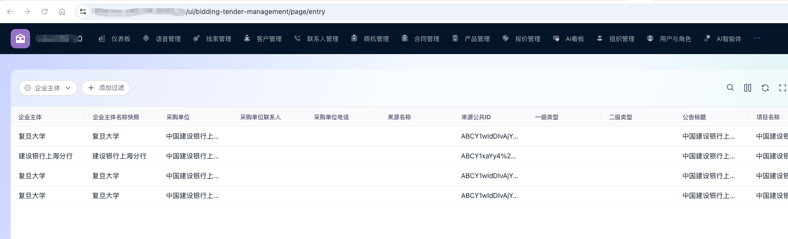

企之蓝（上海）
软件技术有限公司
用 AI Agent 重新定义业务效率。整合 RAG 检索增强、自动化流水线与大语言模型，构建企业级智能执行层。
愿景与定位
领先的 AI Agent 服务商
企之蓝致力于为全球企业打造“数字员工”梯队。我们不仅仅是提供一个工具，而是深入业务场景，通过大模型中枢、长短期记忆管理、多维感知体系及工具链调用，实现业务流程从“人机协同”向“智能自主执行”的飞跃。
为什么企业需要智能执行层？
传统业务模式正面临前所未有的效率瓶颈
人力密集瓶颈
重复性劳动占据员工 70% 时间，难以释放创造力。
系统孤岛林立
数据无法跨平台流转，业务流在不同系统间断裂。
复杂知识流转
法律、财税等高门槛工作对人员依赖度极高，容错率低。
高成本低响应
人工响应速度受限，运营成本随业务规模线性增长。
技术架构
AI Agent 闭环操作系统
Brain (大模型中枢)
基于 LLM 的意图识别、规划与反思，赋予 Agent 思考能力。
Perception (感知)
集成 RAG、视觉与多模态输入，深度理解业务语境。
Action (行动)
通过 API、插件及 RPA 工具自动执行跨系统任务。
Feedback (反馈)
持续迭代的闭环系统，从执行结果中学习与优化。
“实现从被动响应到主动预测的跨越式进步”
核心优势
全栈技术架构
涵盖主流 LLM 接入、自研向量数据库优化及多 Agent 协同工作流设计。
100% 源码交付
真正属于企业私有的数字资产，无第三方黑盒风险，支持离线部署。
深度业务定制
非模板化产品。我们基于贵司业务 SOP 零距离定制 Agent 的执行逻辑与记忆模型。
敏捷交付体系
标准化实施路径，最快 7 天即可完成核心功能原型，缩短价值实现周期。
核心团队
汇聚顶级技术力量，确保项目商业价值与技术可行性
AI方案解决专家
Chief Architect
20 年大规模分布式系统架构经验，主导核心业务平台建设，具备从0到1设计与落地AI驱动系统的能力。
AI 算法工程师
AI Lead Engineer
深耕 NLP 与强化学习领域，精通 RAG 性能调优与大模型微调工程。
AI应用开发专家
Solution Expert
深谙企业数字化转型痛点，擅长将业务需求精准转化为AI执行流。
典型应用场景

智能销售辅助
Agent 实时监控商机，自动调取客户历史、分析竞品并生成个性化话术，协助销售团队快速响应。

自动化合同审查
基于法律知识库的 RAG 检索，Agent 可秒级扫描合同风险，标记合规性缺陷并提出修订建议。

知识产权分析
实时监测全球专利动态，甄别技术侵权风险，为研发决策保驾护航。
语音驱动 CRM 智能体，自动采集招投标信息并沉淀销售线索
销售人员无需再手动切换企查、招采平台和 CRM。只需在手机 Agent 中发送一段语音指令，系统即可自动识别企业、抓取招投标线索、整理字段并回写 CRM，直接形成可跟进的商机入口。
手机 Agent 交互方式
一线销售直接对手机说出“查询XXX公司最近的招投标信息并同步到 CRM”这类业务指令，CRM 助手自动完成语义理解、任务拆解与执行回执，无需培训复杂操作路径。
CRM 回写结果
企业主体、采购单位、公告标题、项目名称等字段自动入库

1. 指令理解
识别语音中的企业名称、时间范围、信息类型与目标动作，自动转成可执行任务。
2. 外部采集
智能体自动检索企业招投标与公告数据，抽取采购单位、联系人、项目名称、来源平台等关键字段。
3. 线索入库
采集结果自动更新到 CRM，沉淀为销售线索池，支持后续分配、筛选与转化跟进。
取代多系统手动录入与搜索
展示从发起到回写的完整闭环
主体、项目、公告、来源信息统一结构化
销售拿到的不只是数据，而是可行动的线索
从需求到上线
仅需 4 步
我们采用敏捷迭代的工作流，确保每一个 Agent 都能完美适配您的业务逻辑。
最终收益
将实施风险降至最低，平均提升 150% 的单一流程效率。
原型验证 (7天)
快速梳理业务场景，通过我们的加速框架在 7 天内产出可交互的 AI Agent 原型。
敏捷开发
基于原型进行模块化开发，重点攻克 RAG 准确率与工具链 API 深度集成。
私有部署
支持主流云环境及企业本地机房部署，确保数据不出域，满足金融级安全要求。
运维支持
全生命周期监控与迭代优化，随着业务变化持续微调 Agent 决策逻辑。